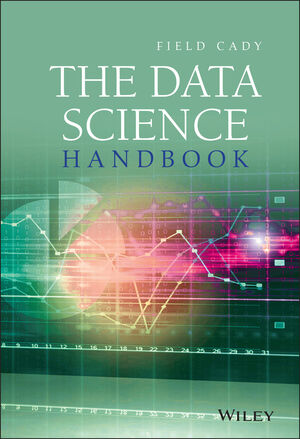
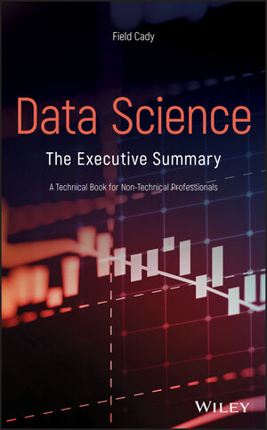
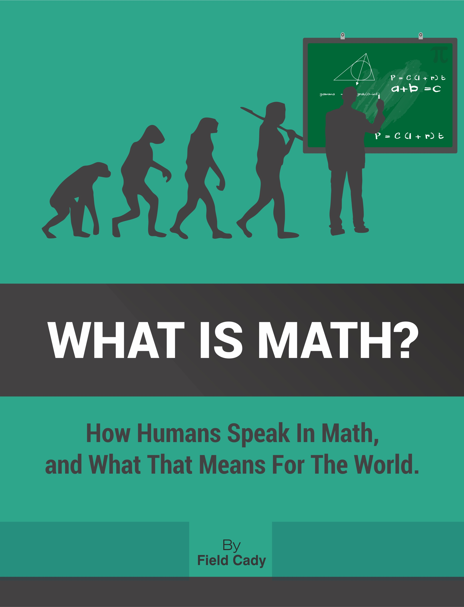

Hello world! This is the website for Field Cady. I am a data scientist and researcher based on Edmonds, WA. I have worked on a diverse set of problems and try to solve them in the simplest way possible, but I have been specializing in stochastic modeling and machine learning (including deep learning).
Here are my LinkedIn and GitHub pages.
|  | The Data Science HandbookA self-contained overview of Data Science, this book covers the math, programming and business. It has been translated into Chinese and Korean, and the 2nd Edition is due out in January 2025. Published by Wiley & Sons |
|  |
Data Science: the Executive SummaryThis for people who don't personally want to do data science, but need to leverage it in their organization. It gives a broad overview of the tools and techniques of data science, including the technical depth needed to critique models, interpret analytical results yourself, and see through bullshit. Also available in Chinese. it is published by Wiley & Sons. |
|  | What is Math?This self-published contains prettymuch everything I have to say about math, cognition and language, as well as awesome historical context and personal anecdotes. If you are interested in the human side of math, then I encourage you to check it out. Having spent most of my life working with math in one form or another, I am convinced that curious people of all backgrounds could benefit from a novel take on the subject. There are a lot of mis-conceptions out there, in everybody from math-phobes to professional researchers. Even if you don't end up agreeing with my thesis, the book covers a fascinating range of topics, and I think there will be something new and exciting for everyone. |
An Elementary Derivation of Mean Wait Time in Polling Systems : This paper, which I only put on ArXiv, generalizes the previous one to general polling systems.
Open-system thermodynamic analysis of DNA polymerase fidelity : Blast from the past! This was written back when I was at UW. I show the critical and under-appreciated role that thermodynamics plays in the low mutation rate of DNA when cells divide.
A tutorial series on Hidden Markov models, their applications, and variants of them
Big Data: The Jetsons, Not Minority Report
is an article that I wrote about Big Data for IDG.
Python for Data Science
: Python is, IMHO, the best general-purpose programming language for data science. This talk gives some tips for how to get the most out of it.
Relational Algebra and the Pig Language
: This talk gives an overview of relational algebra, which is the theoretical underpinning for most modern databases and most Hadoop wrapper languages. It's cool stuff, and worth being familiar with if you want a deeper understanding of these tools. Wow, I can't believe that I used to work with Pig - I feel like a dinosaur!
The Accidental Data Scientist
: A talk I gave at the Metis bootcamp giving advice to people just about the start their careers as data scientists.
CtHMM
: a python librar I developed that supports continuous-time Hidden MArkov Models.
Basically it's HMMs but with irregularly-spaced observations, super useful in situations
like medicine or customer interactions where observations arrive at irregular intervals,
rather than a fixed schedule.
Patent US10162881B2
for machine-assisted discovery of join keys between different datasets.
I led the team at Maana that developed this patent and
integrated it into our production code.
An interactive map
I made of all overstocked alpine lakes in Washington state.
A similar map
showing all licensed ESDM autism therapists worldwide.
Talks
A lot of the public stuff I do is at conferences where it doesn't get recorded. However, some of my work has found its way online.
Other